This tutorial shows how to create various orientation plots using the {structr} package, including stereographic and equal-area projections, fabric plots, density plots, and fault plots.
Import and convert to spherical objects:
data(example_planes_df)
data(example_lines_df)
planes <- Plane(example_planes_df$dipdir, example_planes_df$dip)
lines <- Line(example_lines_df$trend, example_lines_df$plunge)Equal-area projection
Lambert equal area, lower hemisphere projection is the default plotting setting.
stereoplot()
points(lines, col = "#B63679", pch = 19, cex = .5)
points(planes, col = "#000004", pch = 1, cex = .5)
legend("topright", legend = c("Lines", "Planes"), col = c("#B63679", "#000004"), pch = c(19, 1), cex = 1)
title(main = "Example data", sub = "Lambert equal area, lower hemisphere projection")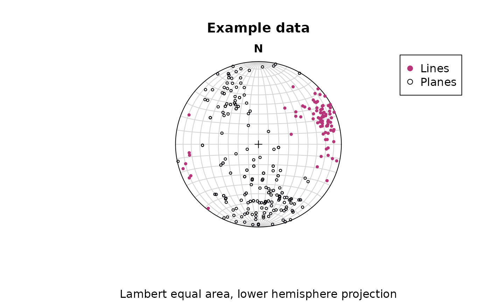
Points can be added using the
points()function.
Stereographic projection
To change to equal angle stereographic, upper hemisphere projection,
just set the earea argument to FALSE, and the
upper.hem argument to TRUE:
stereoplot(earea = FALSE)
points(lines, col = "#B63679", pch = 19, cex = .5, earea = FALSE, upper.hem = TRUE)
points(planes, col = "#000004", pch = 1, cex = .5, earea = FALSE, upper.hem = TRUE)
legend("topright", legend = c("Lines", "Planes"), col = c("#B63679", "#000004"), pch = c(19, 1), cex = 1)
title(main = "Example data", sub = "Equal angle stereographic, upper hemisphere projection")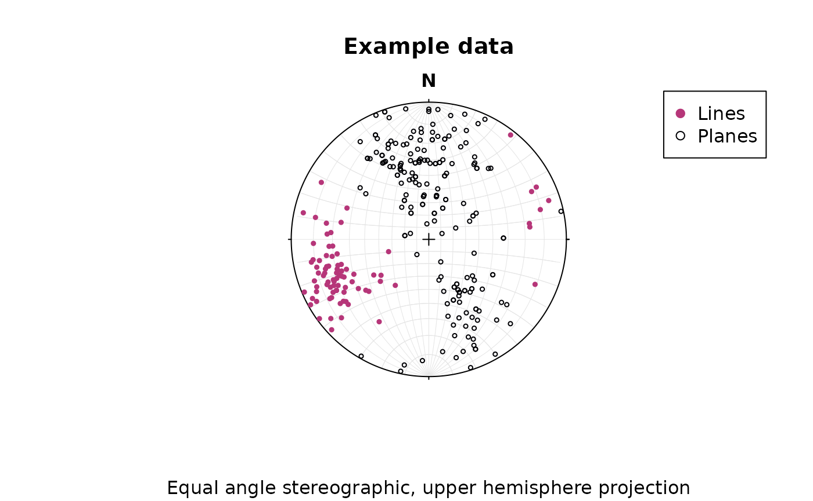
Great and small circles
Great and small circles can be added using the lines()
function.
Adding great circles for the first 10 vectors in planes:
stereoplot(guides = FALSE) # turn of guides for better visibility
lines(planes[1:10, ], col = "lightgrey", lty = 1)
points(planes[1:10, ], col = "#000004", pch = 1, cex = .5)
To plot a small circle with, e.g., a 10° radius, you need to specify
the ang argument in lines():
stereoplot(guides = FALSE)
points(lines[1:5, ], col = "#B63679", pch = 19, cex = .5)
lines(lines[1:5, ], ang = 10, col = "#B63679")Fabric plots
The Eigenvalues of the orientation tensor describe the shape of the distribution of these vectors, that is who clustered, cylindrical or random these vectors are distributed.
A Fabric plot visualizes the shape of the distribution by plotting the eigenvalues of the orientation tensor. Three different diagram are provided by {structr}, namely the triangular Vollmer plot1, the logarithmic biplot (Woodcock plot)2, and the Lode parameter vs. natural octahedral strain diagram (Hsu plot)[|^hsu].
Vollmer plot
vollmer_plot() creates a triangular plot showing the
shape of the orientation distribution (after Vollmer, 1990).
vollmer_plot(planes, col = "#000004", pch = 1, cex = 2)
vollmer_plot(lines, add = TRUE, col = "#B63679", pch = 19, cex = 2)
legend("topright", legend = c("Lines", "Planes"), col = c("#B63679", "#000004"), pch = c(19, 1), cex = 1)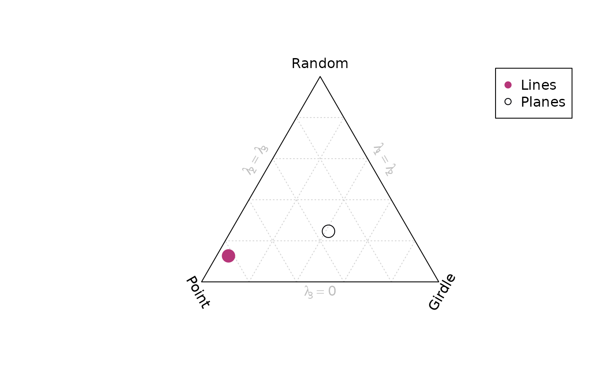
Woodcock plot
woodcock_plot() creates a logarithmic biplot showing the
shape of the orientation distribution (after Woodcock, 1977).
woodcock_plot(planes, col = "#000004", pch = 1, cex = 2)
woodcock_plot(lines, add = TRUE, col = "#B63679", pch = 19, cex = 2)
legend("topright", legend = c("Lines", "Planes"), col = c("#B63679", "#000004"), pch = c(19, 1), cex = 1)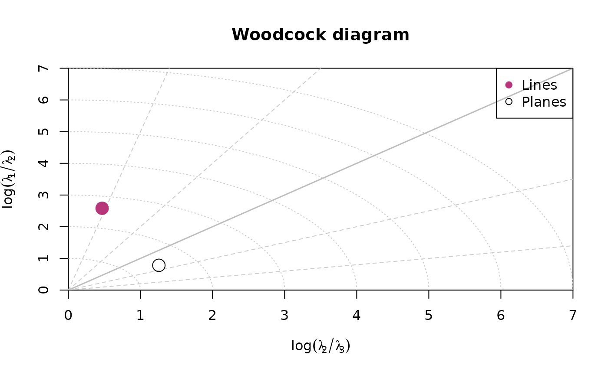
Hsu plot
hsu_plot() creates a Lode parameter3 vs. natural octahedral
strain4
diagram showing the shape of the orientation distribution (after Hsu,
1965).
hsu_plot(planes, col = "#000004", pch = 1, cex = 2)
hsu_plot(lines, add = TRUE, col = "#B63679", pch = 19, cex = 2)
legend("topright", legend = c("Lines", "Planes"), col = c("#B63679", "#000004"), pch = c(19, 1), cex = 1)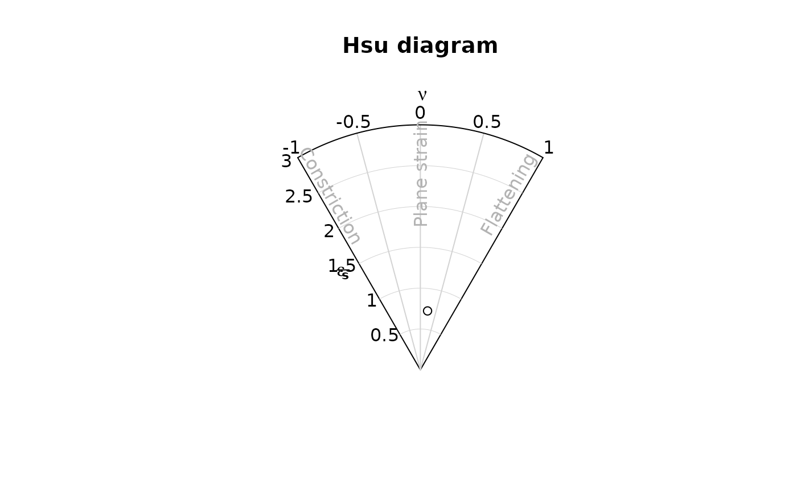
Density plots
Kamb contours5 and densities can be added to an existing
projection plot using the contour functions. Weighted
densities can be controlled by the weights argument and are
useful when the orientation measurements have different accuracies.
example_planes_df$quality <- ifelse(is.na(example_planes_df$quality), 6, example_planes_df$quality) # replacing NA values with 6
plane_weightings <- 6 / example_planes_df$quality
stereoplot(guides = FALSE)
points(planes, col = "grey", pch = 16, cex = .5)
contour(planes, add = TRUE, density.params = list(weights = plane_weightings))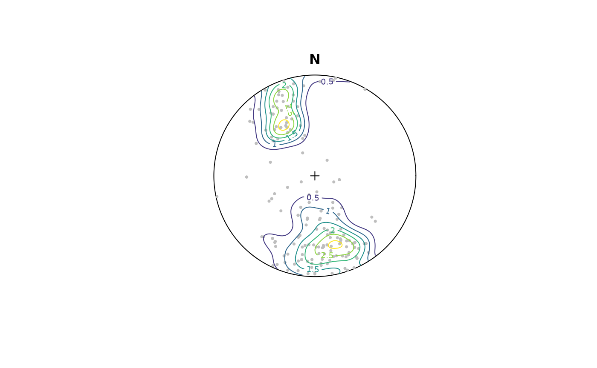
contour() adds contour lines, while
contourf() adds filled contours and image()
adds a density image (i.e. a dense grid of colored rectangles). See
?contour, ?contourf, and ?image
for more information.
stereoplot(guides = FALSE)
points(planes, col = "grey", pch = 16, cex = .5)
contourf(planes, add = TRUE, density.params = list(weights = plane_weightings))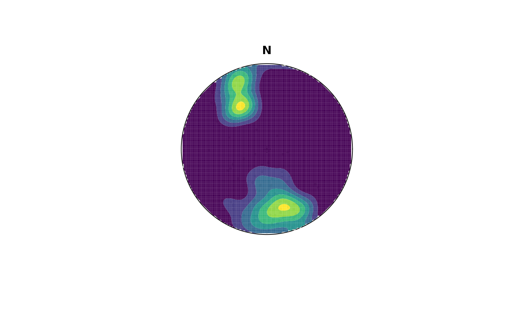
Synopsis
Let’s create a publication ready synoptical plot for the line and plane orientation data, showing the density distribution, eigenvectors/mean values, and fabric strength.
# Minimum eigenvector of plane's orientation tensor:
planes_eigen <- ot_eigen(planes)$vectors
planes_eigen3 <- planes_eigen[3, ]
# Mean and SD of lines
lines_mean <- sph_mean(lines)
lines_sd <- sph_sd(lines)
# Fabric strength
fabric_p <- vollmer(planes)["D"]
fabric_l <- vollmer(lines)["D"]The final plot:
# two plots side by side
par(mfrow = c(1, 2))
# Planes
stereoplot()
points(planes, col = "grey", pch = 16, cex = .5)
contour(planes, add = TRUE, weights = plane_weightings)
points(planes_eigen3, col = "black", pch = 16)
lines(planes_eigen3, col = "black", pch = 16)
title(
main = "Planes",
sub = paste0(
"N: ", nrow(planes), " | Fabric strength: ", round(fabric_p, 2),
"\nLambert equal area, lower hemisphere projection"
)
)
# Lines
stereoplot()
points(lines, col = "grey", pch = 16, cex = .5)
contour(lines, add = TRUE, weights = line_weightings)
points(lines_mean, col = "black", pch = 16)
lines(lines_mean, ang = lines_sd, col = "black")
title(
main = "Lines",
sub = paste0(
"N: ", nrow(lines), " | Fabric strength: ", round(fabric_l, 2),
"\nLambert equal area, lower hemisphere projection"
)
)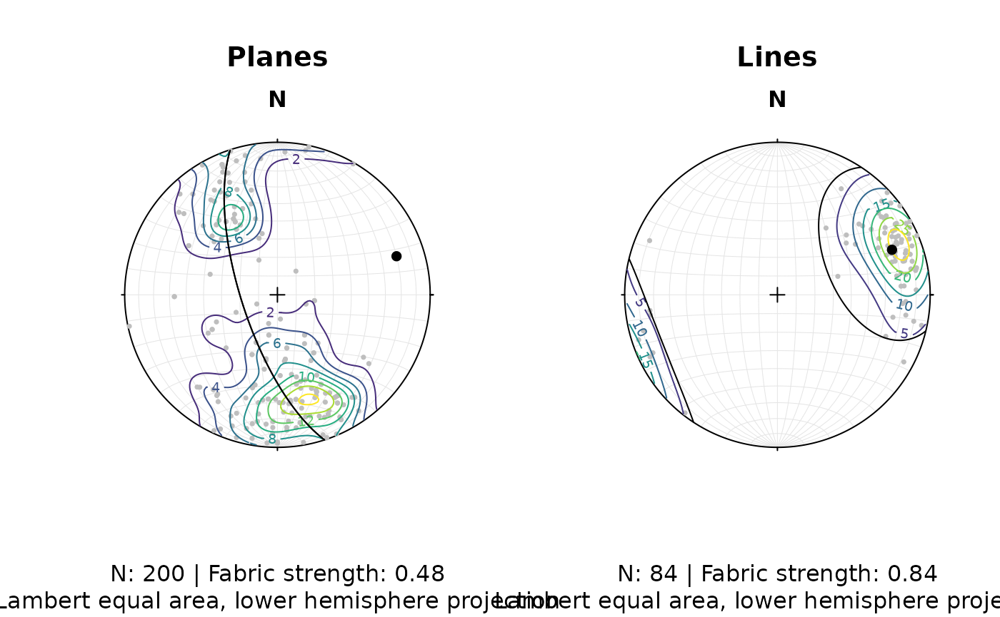
Fault plots
Fault objects consist of planes (fault plane), lines (e.g. striae), and the sense of movement. There are two ways how these combined features can be visualized, namely the Angelier and the Hoeppener plot.
Angelier plot
The Angelier plot shows all planes as great circles and lineations as points (after Angelier, 1984)6. Fault striae are plotted as vectors on top of the lineation pointing in the movement direction of the hanging wall. Easy to read in case of homogeneous or small datasets.
f <- Fault(
c("a" = 120, "b" = 125, "c" = 100),
c(60, 62, 50),
c(110, 25, 30),
c(58, 9, 23),
c(1, -1, 1)
)
stereoplot(title = "Angelier plot")
angelier(f, col = viridis::magma(nrow(f), end = .9))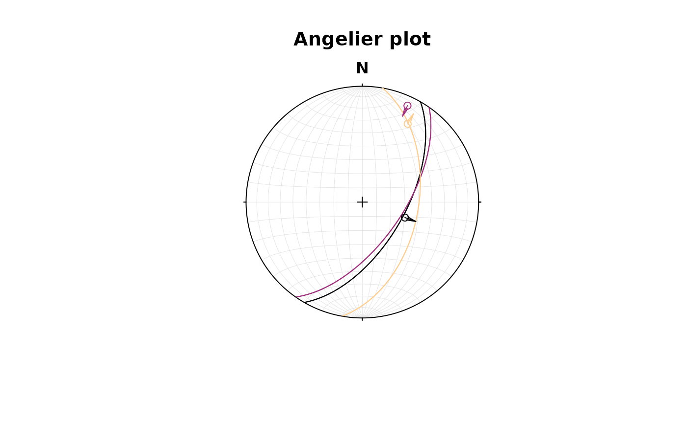
Hoeppener plot
The Hoeppener plot shows all planes as poles while lineations are not shown (after Hoeppener, 1955)7. Instead, fault striae are plotted as vectors on top of poles pointing in the movement direction of the hanging wall. Useful in case of large or heterogeneous datasets.
stereoplot(title = "Hoeppener plot")
hoeppener(f, col = viridis::magma(nrow(f), end = .9), points = FALSE)
The points argument disables plotting the points at the
start of the arrows.
fault_plot()is a wrapper function that allows to switch between Angelier and Hoeppener plot using thetypeargument. See?fault_plotfor details.
Assign plotting parameters based on data
{structr} offers some convenience functions to help your to map certain plotting parameters such as color, size, and symbol based on vector values:
assign_col()for colorassign_cex()for marker size (character expansion)assign_pch()for marker symbols (plotting character)
The following example assigns the col (color), the
cex (size), and the pch (symbol) based on
three different properties:
# define three random properties
prop_continuous1 <- runif(nrow(planes))
prop_continuous2 <- runif(nrow(planes))
prop_discrete <- sort(letters[sample(1:3, size = nrow(planes), replace = TRUE)])
stereoplot()
points(planes,
col = assign_col(prop_continuous1),
cex = assign_cex(prop_continuous2, area = TRUE),
pch = assign_pch(prop_discrete)
)
# Add legends
legend_cex(prop_continuous2, area = TRUE, title = 'A continuous property', position = 'bottomleft', cex = .8)
legend_pch(prop_discrete, title = 'A discrete property', position = 'topleft', cex = .8)
legend_col(pretty(prop_continuous1), title = 'Another continuous property')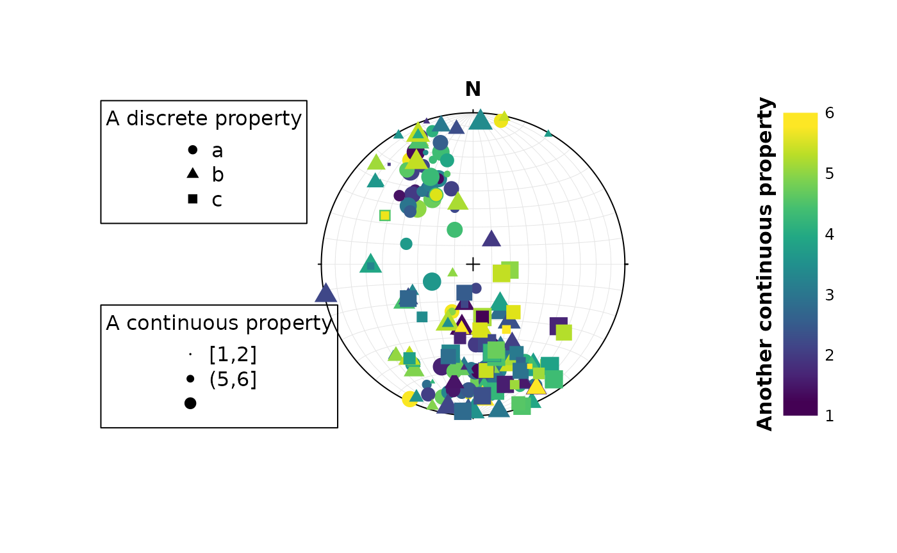
The legend for these plotting parameters can be created using the
legend_* functions.
All these assign_* functions can be applied on
continuous as well as discrete values using assign_*_d.
Also there are binned mapping options through
assign_*_binnned. See ?assign_cex() for more
information.